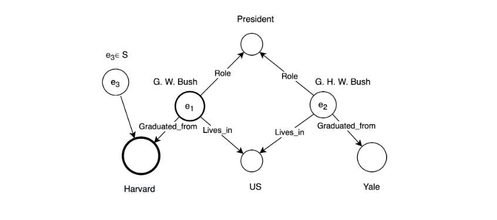

Embedding Knowledge Graphs Attentive to Positional and Centrality Qualities (ECML 2021)
This work proposes a novel KGE method named Graph Feature Attentive Neural Network (GFA-NN) that computes graphical features of entities. As a consequence, the resulting embeddings are attentive to two types of global network features.
Read the Complete Paper Source Code